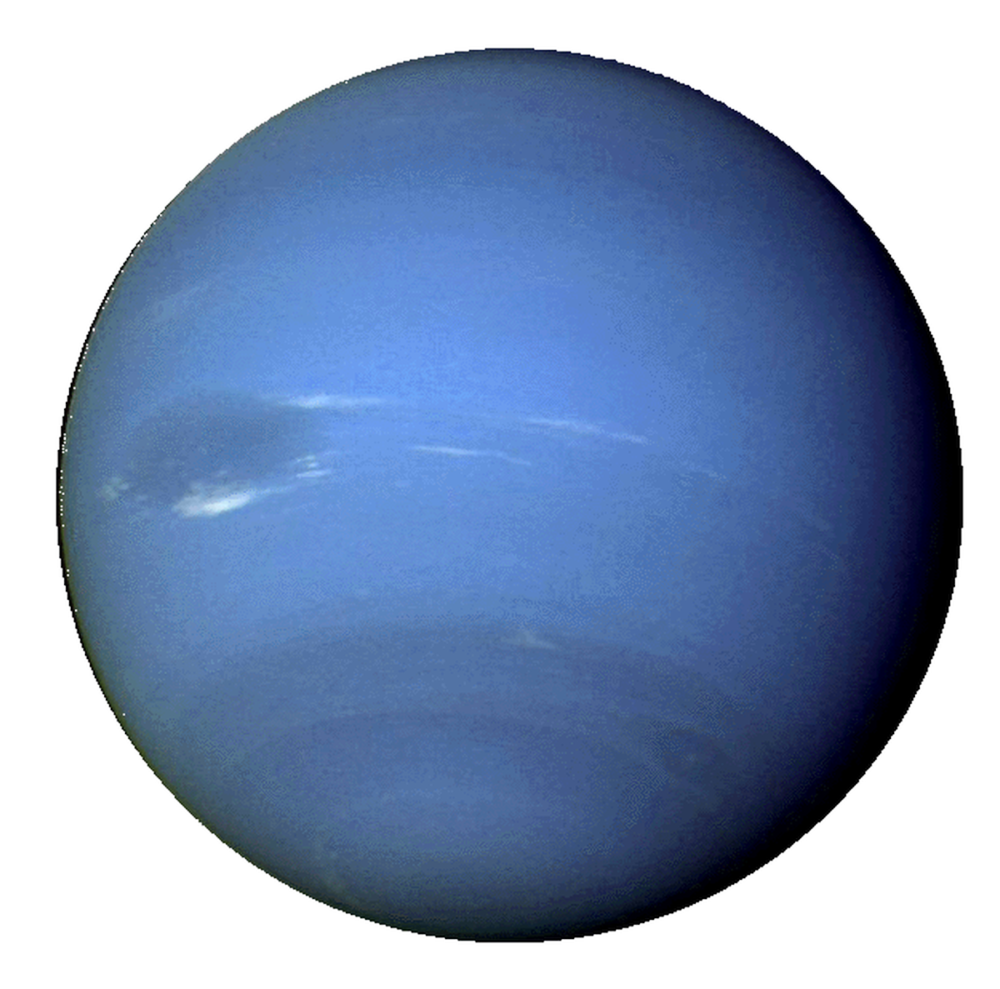

Атмосфера
Верхние слои атмосферы Нептуна представляют собой водородно-гелиевую смесь с соотношением компонентов 4:1.Чем ближе к ледяной оболочке, тем больше в атмосфере метановых примесей. Это простейшее углеводородное соединение придает объекту синий цвет. Также в нижних слоях газовой оболочки формируются аммиачные и сероводородные облака. Атмосфера Нептуна, как и большинства крупных тел Солнечной системы, имеет четыре основные области: тропосфера, стратосфера, термосфера и экзосфера. В тропосфере по мере удаления от поверхности ледяного гиганта температура опускается до минимума в — 213°С, а затем в верхних слоях атмосферы поднимается до -103°С. Термосфера прогревается до аномальных 470°.
- Диаметр – 24 764 км
- Период вращения – 16 часов
- Период обращения – 164.79 земных года
- В 17 раз тяжелее Земли
- Эксцентриситет – 0.011
- Наклон оси – 1.77° по отношению к земной
Погода и климат
Вычислить среднюю температуру Нептуна невозможно, т.к. он не имеет твердой поверхности. Ядро планеты разогрето до 5500°С, в мантии температура колеблется от 4700°С до 1700°С, а самое холодное место – верхняя часть тропосферы – охлаждается до -213°. За счет схожего с Землей наклона оси вращения восьмая планета подвержена смене сезонов. Правда, длятся они очень долго – чуть более 40 лет. С 1980 года лето продолжается на южной стороне, а в 2020 оно придет в северную ее часть. Верхние слои атмосферы в области экватора вращаются медленней, чем в области полюсов. За счет этого возникают гигантские ураганы, достигающие невероятных 600 м/с. Самым крупным вихрем считается Большое темное пятно, которое наблюдалось в период с 1989 по 1994 год. Его размеры достигали 13*6,6 тыс. км. В это же время здесь бушевали еще два крупных урагана, расположенные южнее предыдущего. В 2017 году в области экватора был зафиксирован вихрь диаметром 9 тыс. км.
Кольца Нептуна
Кольцевая система планеты оставалась не обнаруженной более 120 лет с момента ее открытия. В 1968 году было выдвинуто предположение о наличии у колец Нептуна, что сумел подтвердить межпланетный зонд Вояджер-2 в 1989 году. Всего восьмая планета имеет 5 колец. Самым близким к ее поверхности является кольцо Галле, расположенное на расстоянии 42 тыс. км. Далее последовательно идут кольца Леверье, Ласселла и Араго. Последнее кольцо Нептуна, названное в честь британского математика Адамса, удалено от планеты на 63 тыс. км. Оно имеет пять дуг, называющихся Храбрость, Свобода, Равенство 1, Равенство 2 и Братство. Состоят кольца Нептуна из водяного льда и кремниевых солей. Предположительно, в их состав также входят органические вещества, предающие кольцевой системе красный оттенок.
Интересный факт: Через сто лет после обнаружения «восьмерки» в честь ее был назван нептунием новый 93 элемент периодической таблицы Менделеева.
Необычный спутник
Тритон — крупнейший планетарный спутник, движущийся в обратном направлении по отношению к своей планете. Именно благодаря этому спутнику Нептун не стал самой холодной планетой в нашей звездной системе. Их приливное взаимодействие увеличивает температуру планеты, заставляя ее излучать больше тепловой энергии, чем Уран. По мнению ученых, Тритон постепенно сближается с «хозяином» и в итоге войдет в его орбиту, распавшись на части. Тогда Нептун станет объектом с самой мощной кольцевой системой.